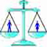

|
|

کابل ؛ میزبان کنفرانسی پیرامون اصلاح قوانین خانواده در کشورهای مسلمان
جمعه12 بهمن 1386
دمکراسی و حقوق برابر ، زمینه کنفرانسی است با عنوان " اصلاح قانون خانواده و حقوق زنان در کشورهای مسلمان : چشم اندازها و درسهایی که فراگرفته شده " . این کنفرانس در آوریل 2008 در کابل افغانستان برگزار خواهد شد . هدف از این کنفرانس به اشتراک گذاشتن تجربه اصلاح قوانین حمایت خانواده و تحلیل رابطه این تجربیات با فضای حاکم بر افغانستان است .
کلیه سخنرانی های این کنفرانس بر روی به چالش کشیدن قانون شریعت متمرکز خواهند بود که بازخوانی دوباره آنها منجر به تغییر قانون خانواده در دو کشور مسلمان مصر و مراکش شده است . این کنفرانس بخشی از پروژه بنیاد سیدا با عنوان " اقدامی برای برابری زنان افغان : حقوق برابر در عمل " می باشد .
به نظر می رسد تغییر در قوانین خانواده در کشورهای مسلمان نشین منطقه و نگاهی دوباره به تبعیضی که بر علیه زنان در این قوانین اعمال می شود ، به موضوعی بحث بر انگیز در میان فعالان حقوق زنان در این کشورها مبدل شده است .
منبع : WLUML